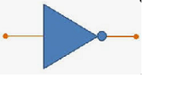

curso de eletrônica online
eletrônica digital

AULA 3 - PORTA LÓGICA NOT
A porta lógica NOT ou Inversora inverte o sinal de entrada, produzindo na saída o sinal oposto.
Então quando temos na entrada um sinal 0, temos na saída um sinal 1 e vice-versa.
Ela pode ser construída com transistores, relês ou circuito integrado, como o CD4049.
Símbolo da porta NOT
| ENTRADA | SAÍDA | LÂMPADA | |||
|---|---|---|---|---|---|
| 0 | 1 | LIGADA | 1 | 0 | DESLIGADA |
Vídeo Relacionado: Como fazer simulador Porta E no Arduíno
voltar